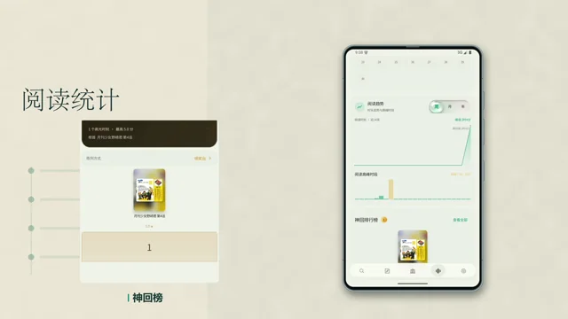
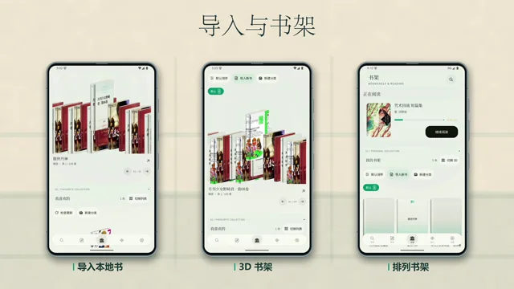
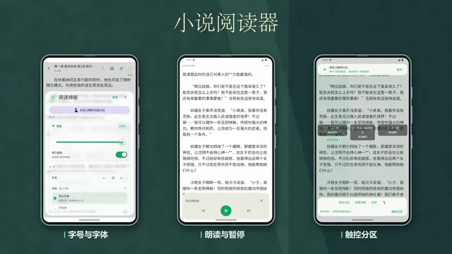
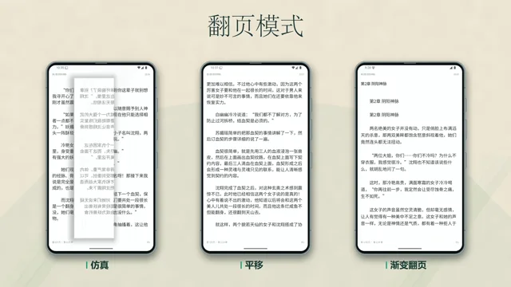
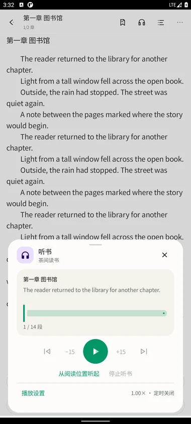
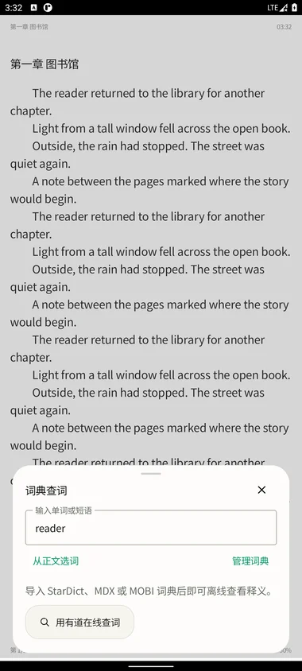
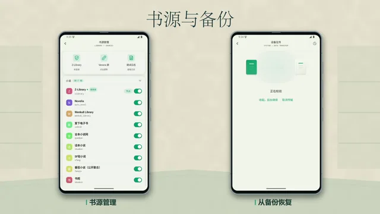

阅读日历与神回榜
查看阅读时长、趋势、连续阅读和历史，为喜欢的章节打分，整理神回榜。

从书库按书名、作者或多语言别名聚合搜索。在发现页分别浏览小说与漫画，按原站分类、推荐、更新或榜单筛选。
书架可排序、分类、批量导入，并在列表和 3D 展示间切换。下载中心可暂停、恢复或重试，从书架打开离线作品。
查看内置书源

自由调整字体、留白、主题和触控分区，选择仿真卷页、覆盖、平移、渐变或滚动。导入 EPUB 后可随原书横排或竖排。


用系统语音、Edge 或自定义语音接口从当前段落起播。支持跟读、睡眠定时与后台跨章。支持秒级进度的音色可快退或快进 15 秒。
长按正文查词、批注或分享阅读时刻。导入 StarDict、兼容的 MDX 或 MOBI 词典后可离线查词。



支持单页、横屏双页、条漫、无缝滚动和横向磁吸。可配置阅读方向、双击缩放、裁边、跨页拆分和预加载。


JaNai 极速版和按需下载的 MangaJaNai 完整版帮助处理画面。设备端识别气泡与文字，所选在线服务或自定义 AI 接口生成译文。

查看阅读时长、趋势、连续阅读和历史，为喜欢的章节打分，整理神回榜。

选择主题、强调色、背景与画质，适配手机、平板和横屏。

导出 .ciallo 文件或使用 Wi-Fi / Wi-Fi Direct 互传。导入前查看预览，按需合并或迁移。
普通文本、带样式的电子书、Kindle 文件以及 Markdown、HTML 和 XHTML 均可导入。PDF 按页显示。
本地导入文件和已下载作品可离线阅读。在线搜索、部分语音、在线阅读和网络翻译需要连接相应服务。
打开设置中的「关于 → 检查更新」。同一更新面板提供 GitHub 和国内 HTTPS 镜像选项，镜像需要可验证的官方 SHA-256。
本地阅读无需登录。部分第三方源的账号、验证和下载权限按提供方规则处理。
OCR 和气泡检测在设备上执行。译文由所选在线服务生成。MangaJaNai 完整模型首次下载后可离线使用。